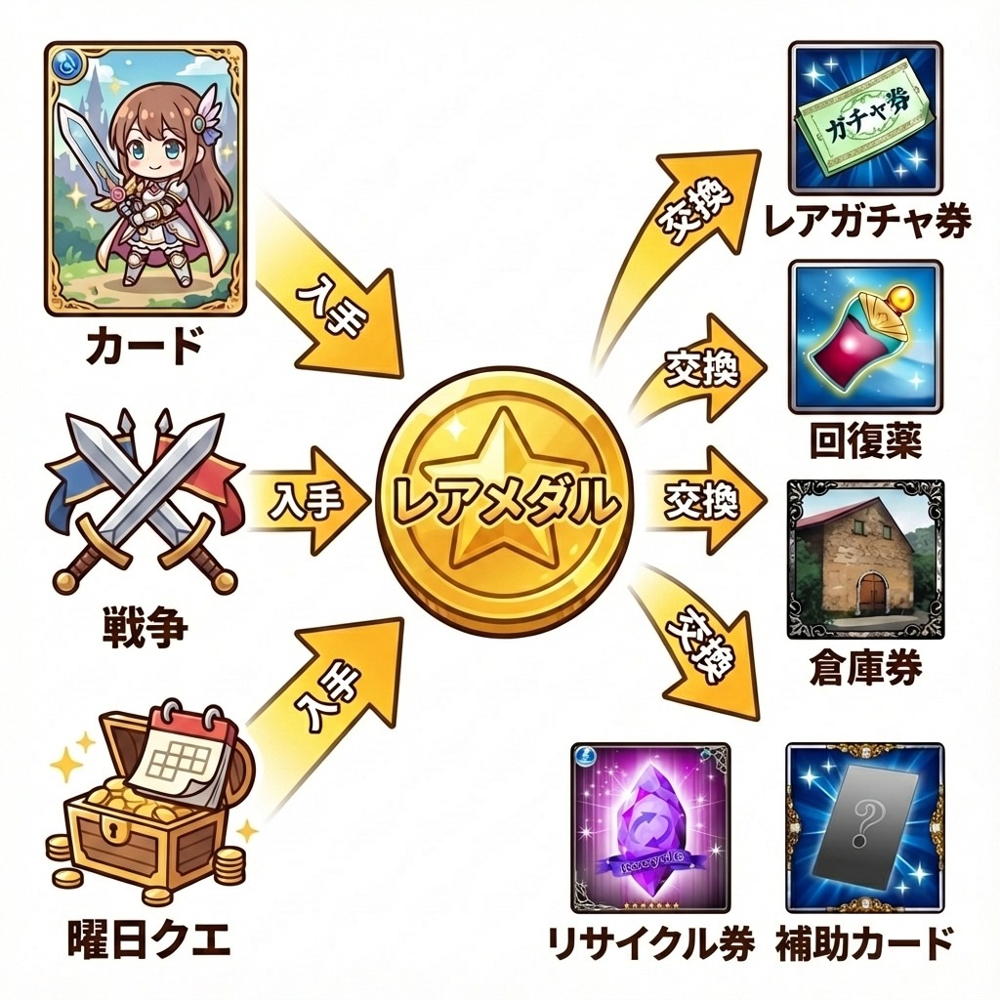

レアメダルについて
レアメダルは、貴重なアイテムやカードと交換できる特別なアイテムです。交換できる景品には、1ヶ月あたりの交換上限が設定されています。

獲得方法
| 入手ルート | 詳細 |
|---|---|
| カード交換 | 不要になったレアカードをメダルに交換できます。 |
| 戦争報酬 | 戦争で勲章を獲得した際の報酬として入手できます。 |
| 曜日クエスト | 特定の曜日クエストの報酬として入手できます。 |
カード交換レート
| カードの種類 | 獲得メダル数 (1枚あたり) |
|---|---|
| Rカード | 1枚 |
| SRカード | 3枚 |
| URカード | 7枚 |
💡 交換のヒント: より多くのメダルを獲得するには
カードは、可能な限り進化させてから交換した方が、獲得メダル数が多くなります。
例:
- Rカード2枚を直接交換すると 1枚 × 2 = 2枚 のメダル。
- Rカード2枚をSRカード1枚に進化させてから交換すると 3枚 のメダル。
- SRカード2枚を直接交換すると 3枚 × 2 = 6枚 のメダル。
- SRカード2枚をURカード1枚に進化させてから交換すると 7枚 のメダル。
🛒 レアメダル交換所 景品一覧 (月間上限あり)
| 景品名 | 説明 | 数量 | 必要メダル数 | 交換回数上限 |
|---|---|---|---|---|
| レアガチャチケット | レアチケットガチャを引くために必要 | 400枚 | 3枚 | 200回 |
| 自分専用回復薬 | クエストに必要な体力を全回復 | 1個 | 1枚 | 70回 |
| 自分専用攻力薬 | バトルに必要な攻力を全回復 | 1個 | 1枚 | 70回 |
| 倉庫券 | 倉庫を利用できるチケット ※レアメダル10枚で永続使用できるため、そちらを強くお勧めします。 |
1枚 | 1枚 | 上限なし |
| SR以上確定ガチャチケット | SR以上確定チケットガチャを引くために必要 | 1枚 | 20枚 | 3回 |
| UR以上確定ガチャチケット | UR以上確定チケットガチャを引くために必要 | 1枚 | 200枚 | 3回 |
| 祝福 カスタムカード強化の印・祝福(小) R | カスタムカードの合成素材として使うとEXP+1000。進化不可。 | - | 3枚 | 10回 |
| リサイクル券 | カードのリサイクルを行うのに必要なチケット。 | 1枚 | 3枚 | 20回 |
| 水 リサイクル補助カード・シークレット Sec | 同じレアリティのリサイクルの素材カードとして利用できる。 | - | 25枚 | 2回 |
| 水 リサイクル補助カード・レジェンド LE | 同じレアリティのリサイクルの素材カードとして利用できる。 | - | 5枚 | 2回 |
| 水 リサイクル補助カード・UR UR | 同じレアリティのリサイクルの素材カードとして利用できる。 | - | 2枚 | 2回 |